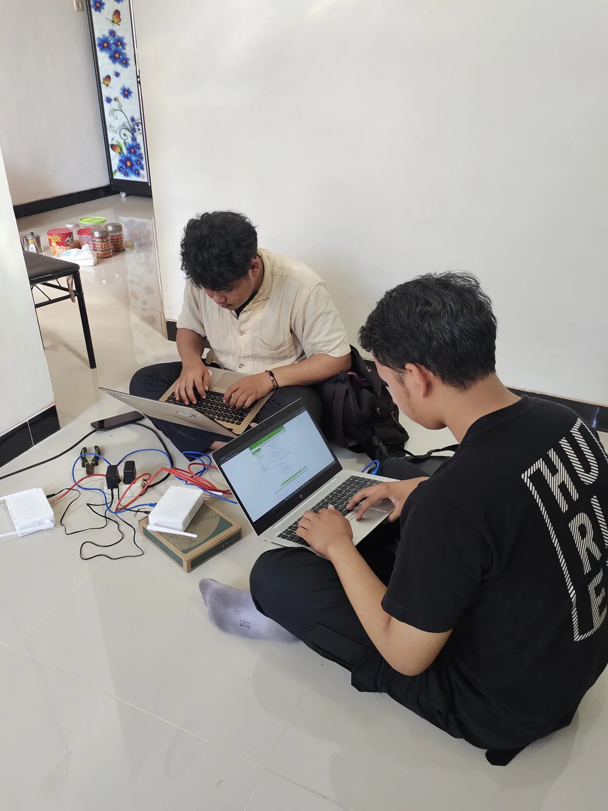

01 / JARINGAN
RouterSwitch
Ilustrasi konsepSegmen ASegmen B
Topologi jaringan kantor
Desain jaringan tiga lantai dengan VLAN terpisah untuk setiap divisi menggunakan Cisco Packet Tracer.
Saya mendalami jaringan komputer, infrastruktur server, dan pengembangan web. Pengalaman praktik saya mencakup konfigurasi layanan dan instalasi fiber optic.

Proyek yang saya kerjakan untuk memahami bagaimana jaringan dan layanan digital saling terhubung.
3 proyek
Desain jaringan tiga lantai dengan VLAN terpisah untuk setiap divisi menggunakan Cisco Packet Tracer.
Konfigurasi layanan web, DNS, dan basis data pada Debian 11 melalui antarmuka command line.
Implementasi halaman login berbasis voucher dan pembatasan bandwidth untuk pengguna hotspot.
Latar pendidikan saya adalah Teknik Komputer dan Jaringan di SMK Negeri 2 Magetan. Saya menekuni infrastruktur jaringan, teknologi server, dan troubleshooting melalui belajar mandiri serta pengalaman praktik.
Selama enam bulan PKL di PT Global Infra Teknologi, Surabaya, saya terlibat dalam instalasi fiber optic dan pemeliharaan jaringan. Saya juga mengeksplorasi pengembangan web dengan HTML, CSS, dan JavaScript.
Di luar teknologi, saya bermain piano sejak usia empat tahun. Musik menjadi ruang untuk melatih fokus, kreativitas, dan ketenangan.
Debian, layanan web dan DNS, instalasi fiber optic, serta penataan kabel dan rack server.
Lihat proyek serverHTML, CSS, Tailwind CSS, dan dasar JavaScript untuk antarmuka web.
Pengalaman praktik, pendidikan, dan sertifikasi yang membentuk cara saya bekerja.
Teknisi Jaringan & Infrastruktur
Surabaya, Jawa Timur
Terlibat dalam operasional ISP, dari instalasi perangkat pelanggan hingga pemeliharaan jaringan.

Perbesar fotoTeknik Komputer dan Jaringan. Proyek akhir: rancang bangun jaringan Fiber To The Home (FTTH).
Aktif dalam OSIS dan mempelajari komputer dasar.
Pendidikan dasar.
MTCNA, bidang administrasi dasar jaringan MikroTik.
Lihat sertifikat di MikroTikUntuk diskusi proyek, kesempatan magang, atau bertukar pikiran tentang jaringan dan teknologi.
{kind=link}